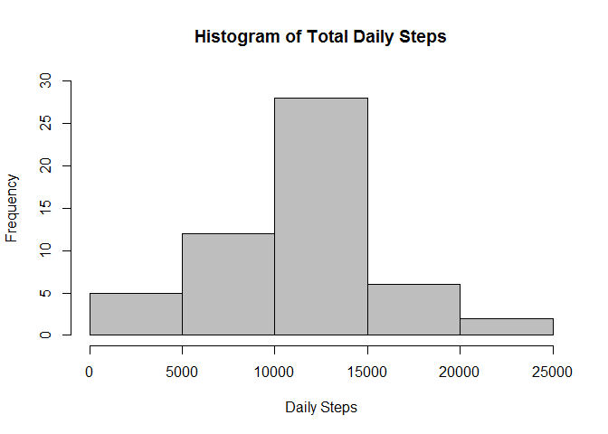
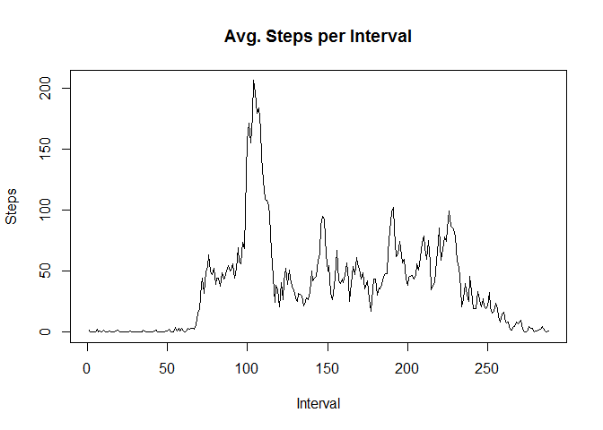
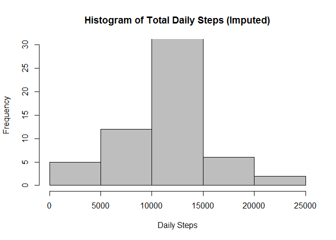
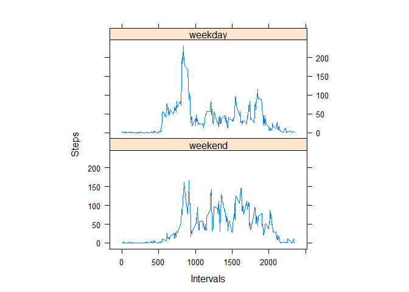

## only download the file and run unzip if the file doesn't already exist
if(!file.exists("activity.csv")) {
url <- "http://d396qusza40orc.cloudfront.net/repdata%2Fdata%2Factivity.zip"
download.file(url, "repdata-data-activity.zip", mode="wb")
unzip("repdata-data-activity.zip")
}activity <- read.csv("activity.csv")steps.TotalByDate <- aggregate(activity$steps, by=list(Date=activity$date), FUN=sum, na.rm=TRUE)
steps.TotalByDate <- aggregate(steps ~ date, data=activity, sum, na.rm=TRUE)hist(steps.TotalByDate$steps, xlab="Daily Steps", main="Histogram of Total Daily Steps", ylim=c(0,30), col="gray")
mean(steps.TotalByDate$steps, na.rm=TRUE)## [1] 10766.19## mean is shown abovemedian(steps.TotalByDate$steps, na.rm=TRUE)## [1] 10765## median is shown abovesteps.MeanByInterval <- tapply(activity$steps, activity$interval, mean, na.rm=TRUE)
plot(steps.MeanByInterval, type="l", main="Avg. Steps per Interval", ylab="Steps", xlab="Interval")
#finds interval & avg.
steps.MeanByInterval.MaxValue <- steps.MeanByInterval[which.max(steps.MeanByInterval)]
### 835 & 206.1698
#find index of interval
which(steps.MeanByInterval %in% steps.MeanByInterval.MaxValue)## [1] 104### 104Ans: Interval 835 (104th in the series).
sum(as.numeric(is.na(activity$steps)))## [1] 2304### 2304Ans: 2304 rows are missing.
# make two vector w/ identical length as the activities by interval series
## vector one contains mean per interval repeated 61 times, if mean = 0, set value to 1
vec_Steps.MeanByInterval <- as.vector(steps.MeanByInterval)
vec_Steps.Means <- rep(vec_Steps.MeanByInterval,61)
vec_Steps.Means[!is.na(activity$steps)] = 1
## vector two contains actual 61 days of interval values, if step = na, set value to 1
vec_Steps <- as.vector(activity$steps)
vec_Steps[is.na(vec_Steps)] = 1## multiply & create!
activity$stepsbymean <- vec_Steps.Means * vec_Stepssteps.TotalByDate.Imputed <- aggregate(stepsbymean ~ date, data=activity, sum, na.rm=TRUE)
hist(steps.TotalByDate.Imputed$stepsbymean, xlab="Daily Steps", main="Histogram of Total Daily Steps (Imputed)", ylim=c(0,30), col="gray")
mean(steps.TotalByDate$steps, na.rm=TRUE)## [1] 10766.19## original mean value is shown abovemean(steps.TotalByDate.Imputed$stepsbymean)## [1] 10766.19## imputed mean value is shown abovemedian(steps.TotalByDate$steps, na.rm=TRUE)## [1] 10765## original median value is shown abovemedian(steps.TotalByDate.Imputed$stepsbymean)## [1] 10766.19## imputed median value is shown above4a. Do these values differ from the estimates from the first part of the assignment?
Ans: Means and median from the estimates (imputed) stayed relatively the same as the original data set.
4b. What is the impact of imputing missing data on the estimates of the total daily number of steps?
Ans: The frequency of the mean values increased because the imputing process replaced NA values with mean.
## create new column containing weekend or weekday value
## ref: http://stackoverflow.com/a/28893302
activity$date <- as.Date(activity$date)
weekdays1 <- c('Monday', 'Tuesday', 'Wednesday', 'Thursday', 'Friday')
activity$WeekDayType <- factor((weekdays(activity$date) %in% weekdays1), levels=c(FALSE, TRUE), labels=c('weekend', 'weekday'))library(lattice)
## create new data set through aggregating interval & weekday type
activity.imputed <- aggregate(stepsbymean ~ interval + WeekDayType, activity, mean)
xyplot(stepsbymean ~ interval | factor(WeekDayType), data=activity.imputed, type = "l", ylab="Steps", xlab="Intervals", aspect=1/2)